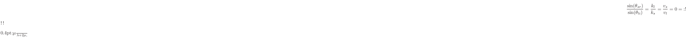

to just two components, called the Lamé constants, as follows[18, p. 95]:
to just two components, called the Lamé constants, as follows[18, p. 95]:
In the general case, a pure longitudinal wave incident on a free interface at angle, , subtended from the normal, gives rise to two reflected waves: one longitudinal wave, propagating at an angle , and one shear wave, propagating at an angle . The propagation vectors of these three waves lie on a plane called the plane-of-incidence. In order to satisfy the boundary conditions for a free surface, namely that the normal stresses must be zero at the surface, the displacement component of this transverse wave must be orthogonal to the plane-of-incidence. Stress in any other direction would violate the boundary conditions.
In order to satisfy the boundary condition for all points on the surface plane, the phases of all incident waves must be synchronized along the surface. Since the planes of constant phase for the wave are no longer parallel to the surface plane, additional waves must be added to accomplish this.
Because the phase velocity--and therefore wavelength--of a shear wave in a given solid is typically less than that of a longitudinal wave, the angle a shear wave subtends from the normal will always be less than that of the two longitudinal waves, which will be identical. This suggests an acoustic version of Snell's law[18, p. 96] [7, p. 141]:
where  is the shear modulus-- the elasticity constant for shear vibrations in an isotropic medium.
is the shear modulus-- the elasticity constant for shear vibrations in an isotropic medium.
In optics, Snell's law describes the behavior of incident rays on an interface in terms of reflected and refracted components. However, the boundary conditions are determined by the Fresnel Equations, and the system behaves differently. While for isotropic solids, shear and transverse polarizations travel at different speeds, there are no examples of such behavior in optics, barring the use of metamaterials. In air-borne acoustics, the medium cannot support shear waves, and does not have this either. Solids and viscous liquids seem to be unique in this.
The amplitudes of these waves are related by the parameters , and . They are: [18, p. 98]
In the case of a shear plane wave incident on a free surface, familiar laws governing the amplitudes and angles subtended from the normal may be derived. Using equation (1.5.2) :
Keeping in mind that for most solids, it becomes apparent that the angle approaches as the angle vanishes. In real situations, there is a critical angle after which the reflected longitudinal wave disappears entirely. This pressure fluctuation, which must exist to satisfy the boundary conditions, is called a surface wave. The analogy to optics is invited once more, as these may be conceived of as subject to ``total internal reflection.''[7, p. 145]
Surface waves can propagate freely themselves, but their behavior is fairly distinct from other wave types. 1.7 [7, p. 150] Rayleigh waves are a type of free surface wave that exist in the surface of objects thicker than a wavelength of interest. These waves decay exponentially toward the interior of the object. However, these waves do not exhibit dispersion in an isotropic, homogenous solid.[7, p. 152][18, p. 113] Surface acoustic waves have practical applications, which will be discussed in section 2.2. The dynamics involved with these waves is too complex to derive here, but a phenomenological account may be given.
Recall that the boundary conditions at the surface of an object require the normal stress to be zero. The stress components in Rayleigh waves must sum together in such a way as to satisfy this condition. Furthermore, because the wave must have finite energy per unit propagation length, the wave's field variables must decrease in amplitude with the depth. [18, p. 110] The wave equation for such a disturbance, propagating for example in the positive  -direction, is [3, p. 70]
-direction, is [3, p. 70]